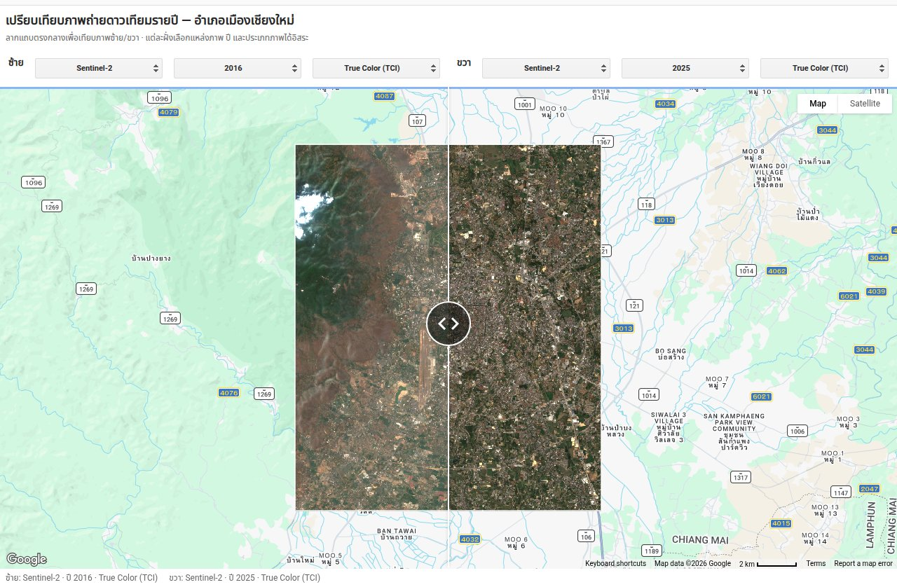
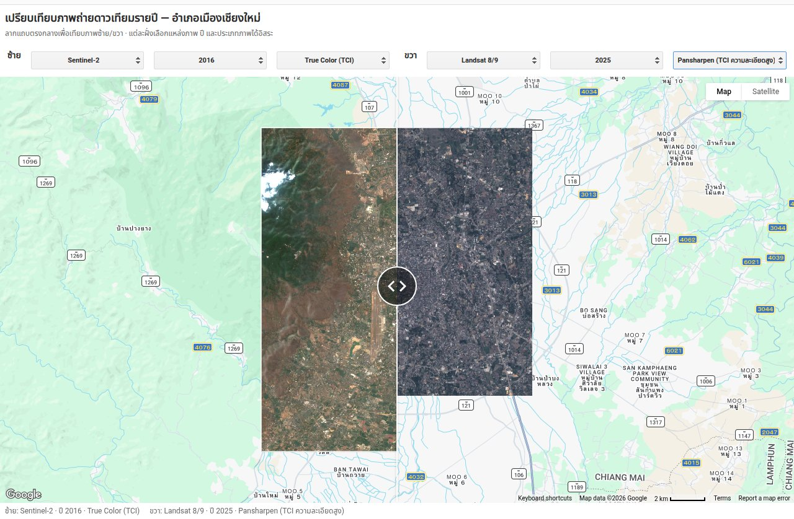

GEE Application แบบ split-view เปรียบเทียบภาพถ่ายดาวเทียม Sentinel-2 และ Landsat 8/9 ระหว่างปีที่เลือกได้อิสระทั้งสองฝั่ง แสดงได้ทั้งภาพสีจริง (True Color) ภาพ False Color, ดัชนีพืชพรรณ (NDVI), ดัชนีพื้นที่เมือง (NDBI) รวมถึงภาพขาวดำความละเอียดสูงและภาพ Pansharpen ของ Landsat เพื่อติดตามการเปลี่ยนแปลงการใช้ที่ดินและการขยายตัวของเมืองในแต่ละปี
การติดตามการเปลี่ยนแปลงการใช้ที่ดินและการขยายตัวของเมืองอย่างต่อเนื่องเป็นข้อมูลสำคัญสำหรับงานด้านนโยบายที่ดินและการบริหารจัดการทรัพยากรธรรมชาติ จึงพัฒนาเครื่องมือเปรียบเทียบภาพถ่ายดาวเทียมรายปีแบบอินเทอร์แอกทีฟ ให้ผู้ใช้เลือกปีและประเภทภาพได้อิสระทั้งสองฝั่งของหน้าจอ แล้วลากแถบกลางเพื่อเทียบความแตกต่าง โดยไม่ต้องเปิดโปรแกรม GIS หรือดาวน์โหลดภาพเอง


สคริปต์เต็มที่ใช้สร้างแอปนี้ เขียนด้วย GEE JavaScript API รันบน Google Earth Engine ครอบคลุมตั้งแต่การดึงข้อมูลดาวเทียม คำนวณดัชนี ทำ Pan-sharpening จนถึงสร้าง UI แบบ split-view
/**
* GEE App: เปรียบเทียบภาพถ่ายดาวเทียมรายปี — อำเภอเมืองเชียงใหม่
* Split-view (swipe) comparison between two user-selected years.
* Each side lets you pick independently:
* - แหล่งภาพ (Source) : Sentinel-2 หรือ Landsat 8/9
* - ปี (Year)
* - ประเภทภาพ (Layer) :
* Sentinel-2 → True Color (TCI) / False Color (FCI) / NDVI / NDBI
* Landsat → True Color / False Color / NDVI / NDBI /
* Panchromatic (ขาวดำ, 15m) / Pansharpen (TCI ความละเอียดสูง)
*
* AOI = อำเภอเมืองเชียงใหม่ เป็นกรอบสี่เหลี่ยมธรรมดา (section 1) — เร็วกว่าครอบทั้งจังหวัด
*
* Speed: each yearly composite only pulls scenes from a 3-month dry-season
* window (Jan-Mar, section 2) instead of the full calendar year — cuts the
* number of images median() churns through by ~4x with minimal quality
* loss, since Northern Thailand is clearest Dec-Feb anyway.
*
* Layout: title → controls row (both sides) → split map → status row (both
* sides), all stacked vertically. Dropdowns are NOT overlaid on the map (see
* the note at section 5 for why that broke the right-hand side previously).
*
* HOW TO USE:
* 1. Paste this entire script into code.earthengine.google.com (new script).
* 2. Click "Run". A split map should appear with dropdowns above each side.
* 3. To publish as a public app: Apps (top toolbar) > Publish new App >
* point it at this script > Publish. You'll get a shareable URL like
* https://<username>.projects.earthengine.app/view/<app-name>
*
* CUSTOMIZE:
* - AOI: section 1 — plain bbox, edit the 4 coordinates directly.
* - YEARS: section 5.
* - Composite date window: DRY_SEASON_START_MONTH / DRY_SEASON_MONTHS in
* section 2. Widen this (or set DRY_SEASON_MONTHS to 12) if a particular
* year's Jan-Mar composite still looks too cloudy.
* - Cloud filter thresholds: section 2 (CLOUDY_PIXEL_PERCENTAGE / CLOUD_COVER).
* - Pansharpen min/max stretch: section 4 (TOA reflectance scale — tweak
* after a visual check, this wasn't hand-tuned against a live run).
*/
// ============================================================
// 1. Area of interest — อำเภอเมืองเชียงใหม่ (กรอบสี่เหลี่ยมธรรมดา)
// ============================================================
// GAUL district-level boundary lookup was tried and dropped — name matching
// at that level turned out unreliable in practice (matched a tiny/wrong
// feature instead of the real district). Plain bbox is simple and correct;
// widen/move these 4 numbers [west, south, east, north] as needed.
var aoi = ee.Geometry.Rectangle([98.90, 18.70, 99.05, 18.87]);
var aoiOutline = ee.Image().byte()
.paint({featureCollection: ee.FeatureCollection([ee.Feature(aoi)]), color: 1, width: 2});
// ============================================================
// 2. Composites per data source (cloud-filtered median, per year)
//
// Speed: use a 3-month dry-season window (Jan-Mar) instead of the full
// calendar year. Northern Thailand is clearest Dec-Feb, so this window
// still gives a clean composite while cutting the number of candidate
// scenes median() has to churn through by roughly 4x — the interactive
// dropdowns stay fully live (every year still computed on demand), this
// just makes each computation itself faster. Widen back to a full year
// (see DRY_SEASON_* below) if a given year's window turns out too cloudy.
// ============================================================
var DRY_SEASON_START_MONTH = 1; // January
var DRY_SEASON_MONTHS = 3; // Jan-Mar
function getS2Composite(year) {
var start = ee.Date.fromYMD(year, DRY_SEASON_START_MONTH, 1);
var end = start.advance(DRY_SEASON_MONTHS, 'month');
return ee.ImageCollection('COPERNICUS/S2_SR_HARMONIZED')
.filterBounds(aoi)
.filterDate(start, end)
.filter(ee.Filter.lt('CLOUDY_PIXEL_PERCENTAGE', 20))
.median()
.clip(aoi);
}
function addS2Indices(img) {
return img.addBands([
img.normalizedDifference(['B8', 'B4']).rename('NDVI'),
img.normalizedDifference(['B11', 'B8']).rename('NDBI')
]);
}
// Landsat: TOA collection (not Surface Reflectance) so the 15m panchromatic
// band (B8) is available for the Panchromatic/Pansharpen layer options.
function getLandsatComposite(year) {
var start = ee.Date.fromYMD(year, DRY_SEASON_START_MONTH, 1);
var end = start.advance(DRY_SEASON_MONTHS, 'month');
var l8 = ee.ImageCollection('LANDSAT/LC08/C02/T1_TOA')
.filterBounds(aoi).filterDate(start, end)
.filter(ee.Filter.lt('CLOUD_COVER', 20));
var l9 = ee.ImageCollection('LANDSAT/LC09/C02/T1_TOA')
.filterBounds(aoi).filterDate(start, end)
.filter(ee.Filter.lt('CLOUD_COVER', 20));
return l8.merge(l9).median().clip(aoi);
}
function addLandsatIndices(img) {
return img.addBands([
img.normalizedDifference(['B5', 'B4']).rename('NDVI'),
img.normalizedDifference(['B6', 'B5']).rename('NDBI')
]);
}
// ============================================================
// 3. Pan-sharpening (HSV swap: replace the "value" channel of the RGB
// composite with the sharper 15m panchromatic band, standard EE recipe)
// ============================================================
function pansharpenLandsat(img) {
var rgb = img.select(['B4', 'B3', 'B2']);
var pan = img.select('B8');
var huesat = rgb.rgbToHsv().select('hue', 'saturation');
return ee.Image.cat(huesat, pan).hsvToRgb().rename(['B4', 'B3', 'B2']);
}
// ============================================================
// 4. Visualization parameters + per-source image builder
// ============================================================
var visNDVI = {
bands: ['NDVI'], min: -0.2, max: 0.8,
palette: ['a50026', 'd73027', 'f46d43', 'fdae61', 'fee08b',
'ffffbf', 'd9ef8b', 'a6d96a', '66bd63', '1a9850', '006837']
};
var visNDBI = {
bands: ['NDBI'], min: -0.5, max: 0.5,
palette: ['2166ac', '67a9cf', 'd1e5f0', 'f7f7f7', 'fddbc7', 'ef8a62', 'b2182b']
};
var SOURCES = {
'Sentinel-2': {
layers: ['True Color (TCI)', 'False Color (FCI)', 'NDVI (พืชพรรณ)', 'NDBI (พื้นที่เมือง)'],
getImage: function (year) { return addS2Indices(getS2Composite(year)); },
vis: {
'True Color (TCI)': {bands: ['B4', 'B3', 'B2'], min: 0, max: 3000, gamma: 1.1},
'False Color (FCI)': {bands: ['B8', 'B4', 'B3'], min: 0, max: 4000, gamma: 1.1},
'NDVI (พืชพรรณ)': visNDVI,
'NDBI (พื้นที่เมือง)': visNDBI
}
},
'Landsat 8/9': {
layers: ['True Color', 'False Color', 'NDVI', 'NDBI',
'Panchromatic (ขาวดำ)', 'Pansharpen (TCI ความละเอียดสูง)'],
getImage: function (year, layerType) {
var raw = getLandsatComposite(year);
if (layerType === 'Pansharpen (TCI ความละเอียดสูง)') {
return pansharpenLandsat(raw);
}
return addLandsatIndices(raw); // NDVI/NDBI bands added; B8 pan stays available too
},
vis: {
// TOA reflectance is roughly 0-1 (typically <0.4 for land); tweak
// min/max after a visual check if scenes look too dark/bright.
'True Color': {bands: ['B4', 'B3', 'B2'], min: 0, max: 0.3, gamma: 1.1},
'False Color': {bands: ['B5', 'B4', 'B3'], min: 0, max: 0.4, gamma: 1.1},
'NDVI': visNDVI,
'NDBI': visNDBI,
'Panchromatic (ขาวดำ)': {bands: ['B8'], min: 0, max: 0.3},
'Pansharpen (TCI ความละเอียดสูง)': {bands: ['B4', 'B3', 'B2'], min: 0, max: 0.3, gamma: 1.1}
}
}
};
var SOURCE_NAMES = Object.keys(SOURCES);
// ============================================================
// 5. Build one side: a bare ui.Map (for the SplitPanel/Linker) plus its
// OWN controls row + status label as separate, non-overlaid widgets.
//
// Earlier version used map.add(controls) to overlay the dropdowns
// directly on each map. That broke the right-hand side: ui.SplitPanel's
// wipe/swipe effect works by rendering both maps full-width and masking
// each to only reveal its half — the right map's "top-left" overlay
// lands in screen space that belongs to the LEFT half, so it was being
// clipped away by that mask (not actually a layout bug, a consequence of
// how the wipe mask works). Keeping the maps bare and putting every
// dropdown/label in ordinary flow panels above/below the split map
// sidesteps this entirely — nothing is ever overlaid on a masked map.
// ============================================================
var YEARS = ['2018', '2019', '2020', '2021', '2022', '2023', '2024', '2025'];
function buildSide(defaultSource, defaultYear, defaultLayer, sideLabel) {
var map = ui.Map();
map.setControlVisibility({layerList: false, zoomControl: false, fullscreenControl: false});
map.centerObject(aoi, 12);
var state = {source: defaultSource, year: defaultYear, layerType: defaultLayer};
var statusLabel = ui.Label('', {fontSize: '12px', color: '#666666', margin: '4px 8px'});
function render() {
map.layers().reset([]);
var year = parseInt(state.year, 10);
var src = SOURCES[state.source];
var img = src.getImage(year, state.layerType);
map.addLayer(img, src.vis[state.layerType], state.layerType + ' ' + state.year);
map.addLayer(aoiOutline, {palette: ['ffffff']}, 'ขอบเขตอำเภอเมืองเชียงใหม่', true, 0.7);
statusLabel.setValue(sideLabel + ': ' + state.source + ' · ปี ' + state.year + ' · ' + state.layerType);
}
var layerSelect = ui.Select({
items: SOURCES[defaultSource].layers, value: defaultLayer,
onChange: function (v) { state.layerType = v; render(); },
style: {stretch: 'horizontal'}
});
var sourceSelect = ui.Select({
items: SOURCE_NAMES, value: defaultSource,
onChange: function (v) {
state.source = v;
var newLayers = SOURCES[v].layers;
layerSelect.items().reset(newLayers);
state.layerType = newLayers[0];
layerSelect.setValue(newLayers[0], false); // false = don't re-fire onChange
render();
},
style: {stretch: 'horizontal'}
});
var yearSelect = ui.Select({
items: YEARS, value: defaultYear,
onChange: function (v) { state.year = v; render(); },
style: {stretch: 'horizontal'}
});
var controlsRow = ui.Panel({
widgets: [ui.Label(sideLabel, {fontWeight: 'bold', margin: '4px 8px 4px 8px'}),
sourceSelect, yearSelect, layerSelect],
layout: ui.Panel.Layout.flow('horizontal'),
style: {stretch: 'horizontal', padding: '4px'}
});
render();
return {map: map, controlsRow: controlsRow, statusLabel: statusLabel};
}
// ============================================================
// 6. Assemble: controls row (both sides) → split map → status row
// ============================================================
var left = buildSide('Sentinel-2', '2019', 'True Color (TCI)', 'ซ้าย');
var right = buildSide('Sentinel-2', '2025', 'True Color (TCI)', 'ขวา');
ui.Map.Linker([left.map, right.map]);
var splitPanel = ui.SplitPanel({
firstPanel: left.map,
secondPanel: right.map,
orientation: 'horizontal',
wipe: true,
style: {stretch: 'both'}
});
var controlsBar = ui.Panel({
widgets: [left.controlsRow, right.controlsRow],
layout: ui.Panel.Layout.flow('horizontal'),
style: {stretch: 'horizontal'}
});
var statusBar = ui.Panel({
widgets: [left.statusLabel, right.statusLabel],
layout: ui.Panel.Layout.flow('horizontal'),
style: {stretch: 'horizontal'}
});
var title = ui.Panel({
widgets: [
ui.Label('เปรียบเทียบภาพถ่ายดาวเทียมรายปี — อำเภอเมืองเชียงใหม่',
{fontWeight: 'bold', fontSize: '18px', margin: '8px 8px 0px 8px'}),
ui.Label('ลากแถบตรงกลางเพื่อเทียบภาพซ้าย/ขวา · แต่ละฝั่งเลือกแหล่งภาพ ปี และประเภทภาพได้อิสระ',
{fontSize: '12px', color: '#666666', margin: '2px 8px 8px 8px'})
]
});
var appLayout = ui.Panel({
widgets: [title, controlsBar, splitPanel, statusBar],
layout: ui.Panel.Layout.flow('vertical'),
style: {stretch: 'both', height: '100%'}
});
ui.root.clear();
ui.root.add(appLayout);
เครื่องมือนี้ช่วยให้เห็นการเปลี่ยนแปลงการใช้ที่ดินและการขยายตัวของเมืองเชียงใหม่ในแต่ละปีได้ทันทีผ่านเบราว์เซอร์ โดยไม่ต้องเปิดโปรแกรม GIS เผยแพร่เป็น GEE Application สาธารณะ เข้าถึงได้ทุกที่ เหมาะสำหรับงานติดตามทรัพยากรธรรมชาติและนโยบายที่ดินที่ต้องอ้างอิงข้อมูลภาพถ่ายดาวเทียมย้อนหลังหลายปี